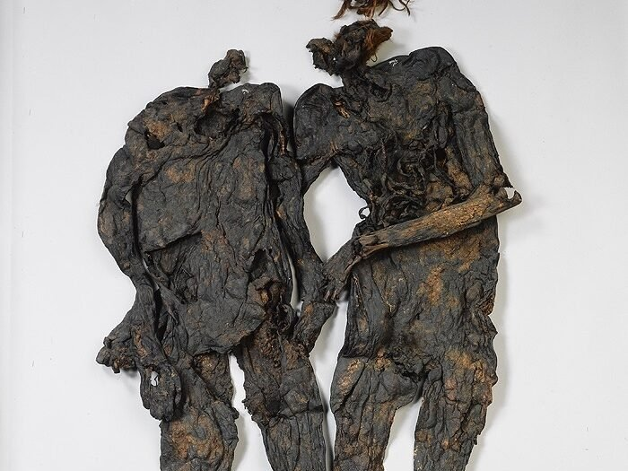

Het paar van Weerdinge

Ga naar de plattegrond van offerschatten
Het Paar van Weerdinge. Het Paar van Weerdinge zijn twee veenlijken uit de late ijzertijd. Ze werden in 1904 gevonden door een veenarbeider in het Weerdingerveen in Drenthe. De lichamen waren goed bewaard door het zure veen. Men dacht eerst dat het een man en een vrouw waren. DNA-onderzoek liet later zien dat het om twee mannen gaat, met verschillende moeders. Ze leefden rond het begin van onze jaartelling. Eén van hen heeft mogelijk een messteek in de borst. Ze werden naakt in het moeras gelegd. Zulke vondsten wijzen op geweld en mogelijk op straffen vanwege misdaad of rituele offers, zoals ook Romeinse schrijvers beschrijven.